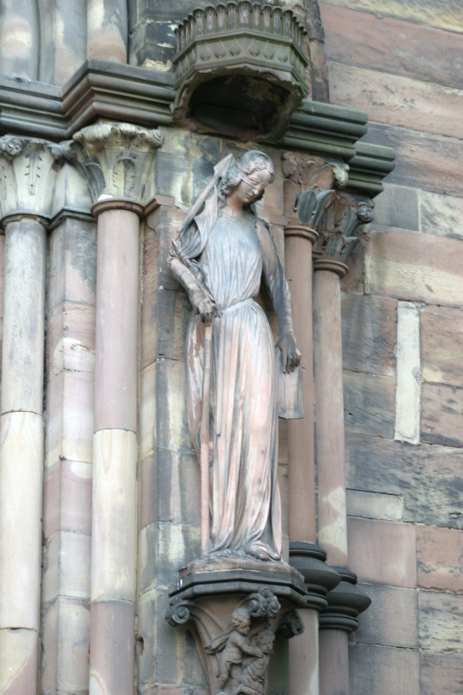
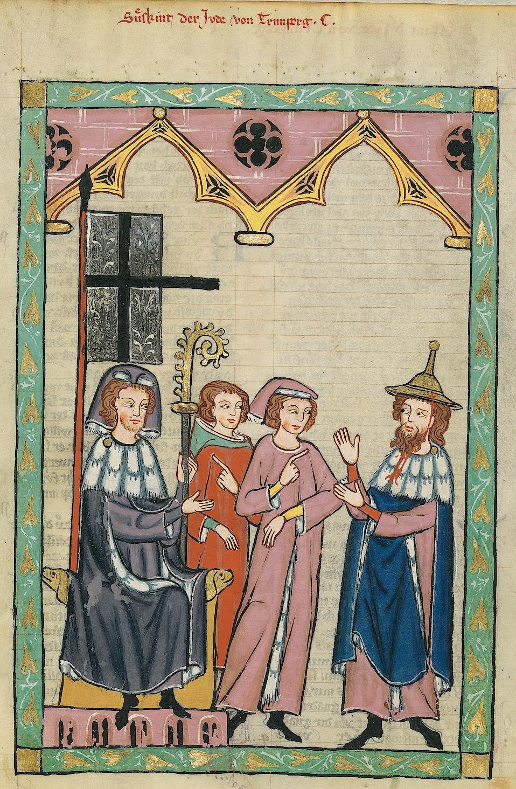
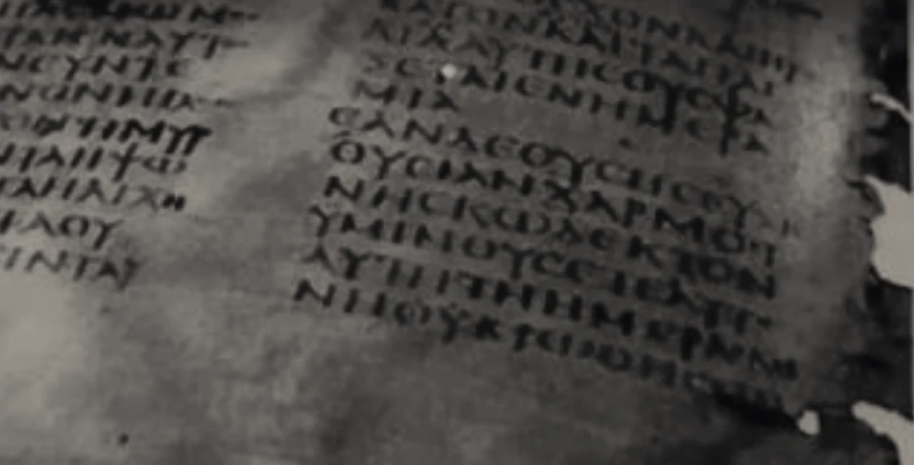
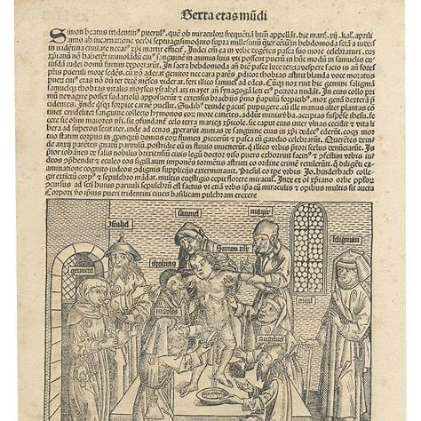
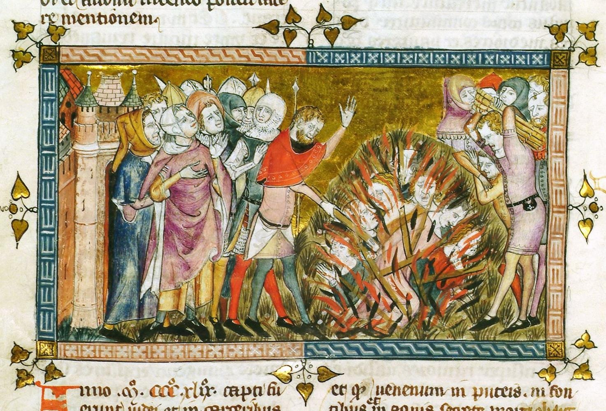

ERA I — ANTI-JUDAISM
When Hatred Became a Sacred Duty
RELIGIOUS JEW-HATRED: THE ORIGINS OF ANTI-JEWISH LIBELS AND PERSECUTIONFor centuries, anti-Jewish hatred in Christian Europe was expressed through the language of religion. In societies where Christian faith shaped moral authority, law, and public life, Jews were increasingly portrayed not merely as religious outsiders, but as enemies of God, Christian truth, and the sacred order.
The accusation was not simply that Jews believed differently. It was that Jews threatened everything society held holy.

The foundations of this hostility developed in early Christian interpretations of Jewish responsibility for the death of Jesus. Over time, theological disputes were transformed into accusations of collective guilt. Jews were branded as Christ-killers, enemies of salvation, and, in some polemical traditions, servants of the Devil. These ideas helped establish a religious framework through which discrimination and persecution could be represented as righteous acts.
During the Middle Ages, new accusations emerged and older ones acquired increasingly terrifying forms. Jews were falsely accused of murdering Christian children for ritual purposes, desecrating the consecrated Eucharist, poisoning wells, and conspiring to destroy Christian society. These fabrications circulated through sermons, chronicles, religious imagery, popular storytelling, and local traditions, sometimes acquiring the authority of accepted truth.
The libel transformed the Jew from a religious outsider into a moral monster.
When a child disappeared, a community suffered disease, or a society confronted catastrophe, Jews could be made into convenient scapegoats. Accusations provided seemingly moral explanations for fear and suffering. They could also serve the interests of religious authorities, political rulers, creditors, and local communities seeking power, property, or the removal of Jewish neighbors.
The consequences were devastating. Jewish communities experienced forced conversions, discriminatory laws, segregation, confiscation of property, expulsions, and massacres. During the Crusades, Jews were murdered in the name of religious devotion. During the Black Death, accusations of well poisoning helped unleash mass violence against Jewish communities already suffering from the plague.
Yet this history was not uniform. Jewish communities also experienced periods of coexistence, intellectual achievement, and protection by Christian rulers and religious authorities. Persecution was shaped by particular historical circumstances, institutions, and decisions.
What endured was a recurring mechanism of demonization: identify society's highest moral good, accuse Jews of violating it, and portray hostility toward them as a defense of that good.
As Dr. Naya Lekht's Three Eras framework emphasizes, the moral vocabulary of Jew-hatred changes across history, while familiar patterns of accusation and demonization can reappear.
This is what makes Jew-hatred so enduring and so difficult to recognize: it presents itself as a virtuous hatred. The Jew is not merely disliked but cast as a cosmic villain whose extermination becomes a moral act.


How False Accusations Became Instruments of Demonization
Three historical libels reveal how religious accusations transformed Jewish communities into targets of fear, exclusion, and violence.
These were not merely expressions of prejudice. They were fabricated accusations that portrayed Jews as enemies of the sacred, turning persecution into what perpetrators could present as moral or religious duty.
Explore the history behind each libel.
The Accusation That Jews Killed God

The deicide libel falsely attributed collective and inherited responsibility for the crucifixion of Jesus to the Jewish people. Although Jesus was executed under Roman authority, influential Christian interpretations extended guilt to Jews across generations.
The accusation portrayed Jews as enemies of Christian salvation and helped establish a theological foundation for centuries of hostility. Through sermons, religious imagery, Passion narratives, and popular teaching, the image of the Jew as the eternal Christ-killer became embedded in parts of European Christian culture.
This accusation contributed to discrimination, forced conversions, exclusion, and violence, particularly during periods of religious mobilization such as the Crusades.
The deicide charge was especially powerful because it portrayed Jews not simply as people who rejected Christian belief, but as a people collectively guilty of an offense against God Himself.
THE DEICIDE LIBEL
The Fabricated Accusation of Ritual Murder

The blood libel accused Jews of kidnapping and murdering Christian children to use their blood in religious rituals, particularly during Passover.
One of the earliest and most influential medieval cases emerged in Norwich, England, in 1144, following the death of a Christian boy named William. The accusation developed into a narrative of Jewish ritual murder and helped establish a model for similar allegations across Europe.
The libel spread through religious chronicles, sermons, local traditions, and visual representations. When a child disappeared or died under unexplained circumstances, Jews could be accused without credible evidence. Such allegations sometimes led to torture, executions, massacres, expulsions, and the confiscation of Jewish property.
The accusation was particularly grotesque because it contradicted Jewish religious law, which strictly prohibits the consumption of blood.
The blood libel transformed Jews into imagined predators of innocent Christian children. By portraying Jewish religious practice as inherently murderous, it turned fear and outrage into weapons against entire communities.
Blaming Jews for the Black Death

Between 1347 and 1351, the Black Death devastated Europe, killing millions. As fear and uncertainty spread, Jewish communities became targets of a fabricated accusation: that Jews had deliberately poisoned wells and water supplies to spread the plague and destroy Christian society.
Despite the fact that Jews were themselves victims of the epidemic, rumors of a coordinated Jewish conspiracy spread across European communities. Under torture, some Jews were forced to confess to crimes they had not committed. These coerced confessions were then used to lend apparent credibility to the accusations.
The consequences were catastrophic. Jewish communities were attacked, expelled, and massacred. In Strasbourg in 1349, a large part of the Jewish community was murdered; some historical accounts report approximately 2,000 victims, although estimates vary. The massacre was shaped by plague-related accusations and local political and economic interests.
The well-poisoning libel demonstrated how a society facing catastrophe could redirect fear toward an already vulnerable minority.
The Cycle of Libels: How False Accusations Became Justifications for Persecution
Across centuries, anti-Jewish libels followed a recurring pattern. False accusations did more than create hostility toward Jews. They provided a moral justification for exclusion, persecution, and violence — while the suffering inflicted upon Jews could later be denied, distorted, or erased from historical memory.
- 01 — LIBEL
Invent the Accusation
Jews were falsely accused of violating society's most sacred values: killing Christ, murdering Christian children, or poisoning communities.
- 02 — DEMONIZATION
Create the Enemy
The accusations transformed Jews from religious outsiders into imagined enemies of God, morality, and society — dangerous, malevolent, and deserving of condemnation.
- 03 — NORMALIZATION
Make Hatred Acceptable
Through religious teachings, sermons, imagery, and public discourse, anti-Jewish accusations became normalized. Discrimination and hostility could increasingly be portrayed as legitimate responses to an alleged Jewish threat.
- 04 — EXCLUSION
Remove Jews from Society
Segregation, discriminatory laws, restrictions on religious and economic life, forced conversions, and expulsions could be justified as necessary measures to protect Christian society.
- 05 — HOSTILITY
Justify Persecution and Violence
Violence against Jews, including massacres, could be presented by perpetrators as righteous, protective, or even sacred acts. The imagined Jewish threat became a justification for real Jewish suffering.
- 06 — DENIAL & ERASURE
Distort or Erase the Truth
The persecution of Jews could subsequently be denied, minimized, justified, or omitted from historical memory. Jewish suffering could be overshadowed by narratives portraying persecutors as defenders of religious truth, while Jewish voices, experiences, and historical records were marginalized or suppressed.
Denial and erasure did not occur uniformly in every episode. Where they occurred, they could protect the legitimacy of earlier accusations and allow anti-Jewish myths to survive across generations.
The libel created the enemy. Demonization justified persecution. Denial and erasure helped preserve the lie.
These six stages were not inevitable or identical in every historical episode. Together, they illustrate a recurring mechanism through which anti-Jewish hostility could be created, legitimized, enacted, and perpetuated.
Denial and erasure can help sustain or revive the original libel — allowing the cycle to begin again.
The Language Changed. The Libels Endured.
The decline of religious authority in parts of Europe did not eliminate anti-Jewish hostility.
As European societies underwent political, scientific, and intellectual transformations, older religious stereotypes were increasingly reinterpreted through secular, nationalist, and racial ideologies.
The Jew who had been portrayed as an enemy of Christian truth could now be depicted as an enemy of racial purity, national identity, or social order.
The transition was gradual, and religious and racial forms of antisemitism frequently coexisted. Yet a fundamental change emerged: conversion, once demanded as a solution to religious difference, could no longer offer protection against ideologies that defined Jewishness as an immutable racial characteristic.
The moral vocabulary had changed, but the practice of constructing Jews as a collective threat continued.
In the first era, Jews were accused of violating religious truth. In the second, they would be accused of threatening racial purity.
FREQUENTLY ASKED QUESTIONS
What is the difference between religious anti-Judaism and modern racial antisemitism?
Religious anti-Judaism historically portrayed Jews as enemies of Christian religious truth and salvation. Modern racial antisemitism increasingly defined Jews as an inherited biological or racial group, portraying them as threats to racial purity and national identity. Although these ideologies developed in different historical contexts, they often shared stereotypes of Jewish collective guilt, conspiracy, and dangerousness. Religious and racial hostility also overlapped rather than replacing one another completely.
What was the earliest recorded blood libel in medieval Europe?
The accusation surrounding William of Norwich in England in 1144 is generally regarded as the first well-documented medieval European ritual-murder allegation against Jews. Following the boy's death, Jews were falsely accused of killing him for religious purposes. The story became influential through the writings of Thomas of Monmouth and helped establish a model for later blood libels throughout Europe. Earlier anti-Jewish ritual-murder accusations existed in other historical contexts.
How were Jews blamed for the Black Death?
During the Black Death of 1347–1351, rumors spread that Jews had deliberately poisoned wells and water supplies to cause the plague. False confessions extracted through torture were used to support these accusations. Although Jews also suffered from the epidemic, the allegations contributed to massacres, expulsions, and the destruction of Jewish communities, including the Strasbourg massacre of 1349. There was no evidence that Jews caused or deliberately spread the plague.
Scholarly Framework
Dr. Naya Lekht — The Three Eras of Jew-Hatred
The exhibition's interpretive framework examines the historical transformation of anti-Jewish hostility through religious anti-Judaism, racial antisemitism, and national or political antizionism.
Historical Scholarship
- United States Holocaust Memorial Museum — Antisemitism in History: From the Early Church to 1400.
- Jeremy Cohen — Christ Killers: The Jews and the Passion from the Bible to the Big Screen.
- E. M. Rose — The Murder of William of Norwich: The Origins of the Blood Libel in Medieval Europe.
- Gavin I. Langmuir — Toward a Definition of Antisemitism.
- Joshua Trachtenberg — The Devil and the Jews: The Medieval Conception of the Jew and Its Relation to Modern Antisemitism.
- Medieval historical chronicles documenting Black Death persecutions, including the Strasbourg massacre of 1349.
- Second Vatican Council — Nostra Aetate (1965).
ERA II — ANTISEMITISM
When Religious Accusations Were Recast as Racial Threats
Discover how older anti-Jewish stereotypes were transformed into racial ideologies that portrayed Jews as an immutable and dangerous collective.
The Third Era: Antizionism and the History of Jew-Hatred
Curatorial Framework: Dr. Naya Lekht — The Three Eras of Jew-Hatred
An initiative of Stop Antizionism.